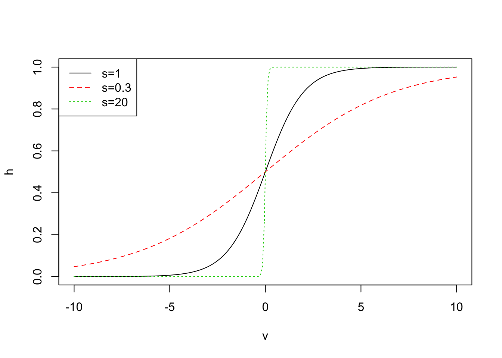
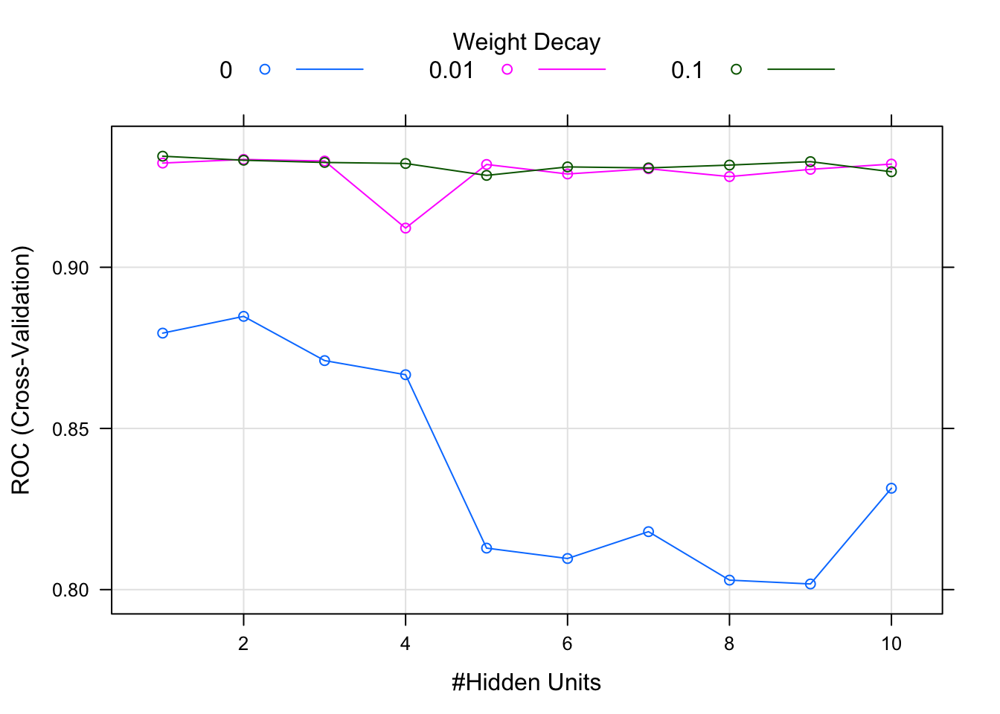

Chapter 13 Neural Network
Neural Network and its derivatives are so far the most hyped models. Those models sound fancy and mysterious, but it is no more than a button push in the implementation (thanks to all kinds of software). They require nearly no data preprocessing, and the users do not need to understand the reason behind the algorithms. People usually react to things they do not understand in two ways: deification and demonization. The black box model is the first case. In any case, in this chapter will illustrate the basic mathematical background of the neural network, what need to pay attention when using it and how to use R to train the neural network model. Hope it will help to demystify neural network in some degree. Many models are like T stage exaggerated clothes, they look fancy but not necessarily practical in real life.
13.1 Projection Pursuit Regression
Before moving onto neural networks, let us start with a broader framework, PPR (Projection Pursuit Regression). It has a form of additive model of the derived features rather than the inputs themselves. Another widely used algorithm, AdaBoost, also fits an additive model in a base learner. I will talk more about it in my future post on tree model. [element of statistical learning]
Assume \(\mathbf{X^{T}}=(X_1,X_2,\dots,X_p)\) is a vector with \(p\) variables. \(Y\) is the corresponding response variable. \(\mathbf{\omega_{m}},m=1,2,\dots,M\) is parameter vector with \(p\) elements.
\[f(\mathbf{X})=\sum_{m=1}^{M}g_{m}(\mathbf{\omega_{m}^{T}X})\]
The new feature \(\mathbf{V_{m}}=\mathbf{\omega_{m}^{T}X}\) is a linear combination of input variables \(\mathbf{X}\). The additive model is based on the new features. Here \(\mathbf{\omega_{m}}\) is a unit vector, and the new feature \(\mathbf{v_m}\) is actually the projection of \(\mathbf{X}\) on \(\mathbf{\omega_{m}}\). It projects the p-dimensional independent variable space onto the new M-dimensional feature space. This is similar to the principal component analysis except that the principal component is orthogonal projection but it is not necessarily orthogonal here.
I know it is very abstract. Let’s look at some examples. Assume \(p=2\), i.e. there are two variables \(x_1\) and \(x_2\). If \(M=1\), \(\mathbf{\omega^{T}}=(\frac{1}{2},\frac{\sqrt{3}}{2})\), then the corresponding \(v=\frac{1}{2}x_{1}+\frac{\sqrt{3}}{2}x_{2}\). Let’s try different setings and compare the results:
\(\mathbf{\omega^{T}}=(\frac{1}{2},\frac{\sqrt{3}}{2})\), \(v=\frac{1}{2}x_{1}+\frac{\sqrt{3}}{2}x_{2}\) , \(g(v)=\frac{1}{1+e^{-v}}\)
\(\mathbf{\omega^{T}}=(1,0)\), \(v = x_1\), \(g(v)=(v+5)sin(\frac{1}{\frac{v}{3}+0.1})\)
\(\mathbf{\omega^{T}}=(0,1)\), \(v = x_2\), \(g(v)=e^{\frac{v^2}{5}}\)
\(\mathbf{\omega^{T}}=(1,0)\), \(v = x_1\), \(g(v)=(v+0.1)sin(\frac{1}{\frac{v}{3}+0.1})\)
Here is how you can simulate the data and plot it using R:
# use plot3D package to generate 3D plot
library(plot3D)
# get x1 and x2
# note here x1 and x2 need to be matrix
# if you check the two objects, you will find:
# columns in x1 are identical
# rows in x2 are identical
# mesh() is funciton from plot3D package
# you may need to think a little here
M <- mesh(seq(-13.2, 13.2, length.out = 50),
seq(-37.4, 37.4, length.out = 50))
x1 <- M$x
x2 <- M$y
## setting 1
# map X using w to get v
v <- (1/2)*x1+(sqrt(3)/2)*x2
# apply g() on v
g1<-1/(1+exp(-v))
par(mfrow = c(2, 2), mar = c(0, 0, 1, 0))
surf3D(x1,x2,g1,colvar = g1, border = "black", colkey = FALSE, box = FALSE, main = "Setting 1")
## setting 2
v <- x1
g2 <- (v+5)*sin(1/(v/3+0.1))
surf3D(x1,x2,g2,colvar = g2, border = "black", colkey = FALSE, box = FALSE, main = "Setting 2")
## setting 3
v <- x2
g3 <- exp(v^2/5)
surf3D(x1,x2,g3,colvar = g3, border = "black", colkey = FALSE, box = FALSE, main = "Setting 3")
## setting 4
v <- x1
g4 <- (v+0.1)*sin(1/(v/3+0.1))
surf3D(x1,x2,g4,colvar = g4, border = "black", colkey = FALSE, box = FALSE, main = "Setting 4")You can see that this framework can be very flexible. In essence, it is to do a non-linear transformation of the linear combination. You can use this way to capture varies of relationships. For example,\(x_{1}x_{2}\) can be written as \(\frac{(x_{1}+x_{2})^{2}-(x_{1}-x_{2})^{2}}{4}\), where \(M=2\). All the higher order factors of \(x_1\) and \(x_2\) can be represented similarly. If \(M\) is large enough, this frame can approximate any continuous function on \(\mathbb{R}^{p}\). So the model family covers a board area, but with a price. That is the interpretability. Because the number of parameters increases with M and the mode is nested.
Since the advent of the PPR in 1981, it has not been widely used. It is due to the limitation of computational capability then. But this is a new idea which leads to the debut of the neural network model.
13.2 Neural Networks
Here we introduce one of the most widely used models: single hidden layer back-propagation network. It is a hierarchical regression or classification model with the following structure:

This is a single hidden layer back-propagation network.
Let \(K\) represents the number of variables. In the regression model, there is usually only one response variable. However, in the multi-classification case (the number of classes is greater than 3), the number of response variables is the number of categories. For simplicity, we assume that \(K = 1\),i.e. only one response \(Y\). For the classification problem, the possible value of \(Y\) is \(0/1\). We will start from the bottom. Let \(\mathbf{X^{T}}=(X_{1},X_{2},\dots,X_{p})\) be a vector of \(p\) independent random variables. The first step is from \(\mathbf{X}\) to the new feature \(\mathbf{Z^{T}}=(Z_1,Z_2,\dots, Z_M)\).
\[Z_{m}=h(\alpha_{0m}+\mathbf{\alpha_{m}^{T}}X),\ m=1,\dots,M\]
The \(h(\cdot)\) is called Activation Function , usually \(h(v)=\frac{1}{1+e^{-v}}\). It is the S-shaped function in logical regression that is familiar to many. Let’s expand it a little. Add a factor \(s\) in front of \(v\) in the formula above, that is: \(h(v)=\frac{1}{1+e^{-sv}}\). Let’s explore how \(s\) impact the shape of the curve:
v <- seq(-10,10,length=200)
s1 <- 1
s2 <- 0.3
s3 <- 20
h1 <- 1/(1+exp(-s1*v))
h2 <- 1/(1+exp(-s2*v))
h3 <- 1/(1+exp(-s3*v))
plot(v,h1,type="l",col=1, ylab="h", lty = 1)
lines(v,h2,col=2, lty = 2)
lines(v,h3,col=3, lty = 3)
legend("topleft", c("s=1","s=0.3","s=20"), lty = c(1,2,3), col = c(1,2,3))
It is easy to see that the smaller \(s\) is, the more linear the line is; the larger \(s\) is, the closer the line is to a piecewise function. Understanding the role of \(s\) is critical to choose the starting values of the model.
The next step is from \(\mathbf{Z}\) to \(Y\):
\[Y=g(\beta_{0}+\mathbf{\beta^{T}Z})=f(\mathbf{X})\]
In regression, \(g(\cdot)\) is an identical function, i.e.:
\[Y=\beta_{0}+\mathbf{\beta^{T}Z}\]
For classification model with \(K\) categories, each category corresponds to a liear combination of \(\mathbf{Z}\). Apply softmax function to the linear combination to get \(Y_{k}\):
\[Y_{k}=\frac{e^{\beta_{0k}+\mathbf{\beta_{k}^{T}Z}}}{\Sigma_{l=1}^{K}e^{\beta_{0l}+\mathbf{\beta_{l}^{T}Z}}}\]
The idea behind this transformation is very straight forward. After softmax transformation, the value is within \([0,1]\). The nonlinear function \(h(\cdot)\) expands the linear model greatly. In some sense, \(h(\cdot)\) is to activate a status which is how come the name of the function. The magnitude \(\Vert\mathbf{\alpha_{m}}\Vert\) impacts the extent to which the status is activated. From the above plot we can see that when \(\Vert\mathbf{\alpha_{m}}\Vert\) is small, the activation function is close to linear. When \(\Vert\mathbf{\alpha_{m}}\Vert\) is large, the function is close to piecewise function. Why don’t we use a piecewise function instead? Because the function is non-derivable at the breakpoint which will bring difficulties to the subsequent model fitting. By tuning the parameter, the model can go from close to linear to highly un-linear. Does the function make more sense now?
The single hidden layer back-propagation network here is identical to the PPR model introduced at the begining. The only difference is that \(g_m(v)\) in PPR is a non-parametric function, i.e. it is estimated by local smoothing. The \(h(\cdot)\) in neural network has a real form. We can use the format of PPR to represent neural network:
\[\beta_{m}h(\alpha_{0m}+\mathbf{\alpha_{m}^{T}X})=\beta_{m}h(\alpha_{0m}+\Vert\mathbf{\alpha_{m}}\Vert(\mathbf{\omega_{m}^{T}X}))=g_{m}(\mathbf{\omega_{m}^{T}X})\]
where \(\mathbf{\omega_{m}=\frac{\mathbf{\alpha_{m}}}{\Vert\mathbf{\alpha_{m}}\Vert}}\) is a unit vector. The general non-parametric function \(g(\cdot)\) in PPR is more complicated than the well-defined parametric funciton \(h_{\beta,\alpha_{0},s}(v)=\beta h(\alpha_{0}+sv)\) in neural network. Though the later seems intimidating.
Each of the original input variables \(X_1,\dots, X_p\) is like neurons. The function \(h(\cdot)\) is like synapses. Why? Consider the function of synapses. Synapse is a junction between two nerve cells. A neuron releases an electrical or chemical signal that passes through a synapse to another neuron. If \(h(\cdot)\) is a step function, when the input exceeds a certain value, the function is nonzero. It is an analogy to a synapse. Neuron X sends the signal through the synapse h, when the signal strength surpasses a certain threshold, it will pass to the next neuron Z.
Since the function is non-derivable at the breakpoint, people make a little change to the step function and get the S-shaped line. By controlling the parameters, you can deform the S-shaped curve from approximately linear to highly nonlinear as a resistance switch.
13.3 Fitting Neural Network
The parameters in the neural network model are the weights:
\[\{\alpha_{0m},\mathbf{\alpha_{m}};m=1,2,\dots,M\},\ M(p+1)\ weight\] \[\{\beta_{0},\mathbf{\beta}\},\ M+1\ weight\]
There are \(M(p+1)+M+1\) weights to estimate. We use \(\Theta\) to represent parameter set. For regression, to fit a model is to minimize the following sum of squared error:
\[R(\Theta)=\sum_{i=1}^{N}(y_{i}-f(x_{i}))^{2}\]
For classification, the goal is to optimize entropy:
\[R(\Theta)=-\sum_{i=1}^{N}\Sigma_{k=1}^{K}y_{ik}log(f_{k}(x_{i}))\]
Here \(K\) represents the number of category.
If \(p=100\) and \(M = 30\), the total number of parameters for the model is \(3061\). As \(p\) and \(M\) grow, the number of parameters will increase quickly. It is not hard to imagine that it will soon over-fit. A possible solution is to add a penalty to the number of parameters.
Gradient descent is a popular method to minimize \(R(\Theta)\). The “reverse spread” comes from the optimization process. Due to the embedding form of the model, so the gradient can be easily derived by following the chain rule. It is:
\[\frac{df(g(x))}{dx}=\frac{df}{dg}\frac{dg}{dx}\]
The approximation process goes from the bottom of the network to the top, and then back from the top to bottom which leads to the name “reverse propagation.” The spread is forward, the reverse is returned. It reduces \(R(\Theta)\) gradually during interactions.
Now take the regression as an example to illustrate the process. Assume \(z_{mi}=h(\alpha_{0m}+\mathbf{\alpha_{m}^{T}}x_{i})\) and \(\mathbf{z_{i}^{T}}=(z_{1i},z_{2i},\dots,z_{Mi})\), then we have:
\[R(\Theta)=\Sigma_{i=1}^{N}R_{i}=\Sigma_{i=1}^{N}(y_{i}-\beta_{0}-\mathbf{\beta^{T}z_{i}})^{2}\]
Derive the above equation by chain rule:
\[\frac{\partial R_{i}}{\partial\beta_{m}}=-2(y_{ik}-\beta_{0}-\mathbf{\mathbf{\beta}^{T}z_{i}})z_{mi}\]
\[\frac{\partial R_{i}}{\partial\alpha_{ml}}=-2(y_{ik}-\beta_{0}-\mathbf{\mathbf{\beta}^{T}z_{i}})\beta_{m}h'(\alpha_{0m}+\mathbf{\alpha_{m}^{T}}x_{i})x_{il}\]
Given the gradient, the \((r+1)^{th}\) iteration is:
\[\beta_{m}^{(r+1)}=\beta_{m}^{(r)}-\gamma_{r}\Sigma_{i=1}^{N}\frac{\partial R_{i}}{\partial\beta_{m}^{(r)}}\]
\[\alpha_{ml}^{(r+1)}=\alpha_{ml}^{(r)}-\gamma_{r}\Sigma_{i=1}^{N}\frac{\partial R_{i}}{\partial\alpha_{ml}^{(r)}}\]
There is one more parameter \(\gamma_{r}\), aka learning rate. We can simply write the previous gradients as:
\[\frac{\partial R_{i}}{\partial\beta_{m}}=\delta_{i}z_{mi}\]
\[\frac{\partial R_{i}}{\partial\alpha_{ml}}=s_{mi}x_{il}\]
where \(\delta_{i}\) and \(s_{mi}\) are called model error in the output level and hidden level respectively. The reverse propagation function is:
\[s_{mi}=-2(y_{ik}-\beta_{0}-\mathbf{\mathbf{\beta}^{T}z_{i}})\beta_{m}h'(\alpha_{0m}+\mathbf{\alpha_{m}^{T}}x_{i})\]
The algorithm goes back and forward using the function. The learning rate \(\gamma_{r}\) is usually a constant. It can also be a tuning parameter.
13.4 Model Training
There are some aspects to pay attention to when training neural networks.
- Initial value
Recall the S-shaped curves shown before. If the weight is close to 0, the model tends to be linear. As there are usually many parameters in the model, by default, the algorithm will select the initial weight to be near 0. In this way, as the iteration progresses, the model is gradually adjusted from linear to non-linear.
- Overfitting
As mentioned before, the parameters of the neural network increased fast which will quickly over-fit. There are two ways to cope with the problem:
- Early termination: end the iteration before reaching the optimal parameter estimates
- Penalty function: penalize the number of parameters. When the punishment is large, all the parameters estimates are 0.
Use \(\lambda\) to indicate the parameter for weight decay. Instead of optimize \(R(\Theta)\), we will optimize \(R(\Theta)+\lambda J(\Theta)\) here. \(J(\Theta)\) has the following two types:
\[J(\Theta)=\Sigma_{m}\beta_{m}^{2}+\Sigma_{ml}\alpha_{ml}^{2}\]
or:
\[J(\Theta)=\Sigma_{m}\frac{\beta_{m}^{2}}{1+\beta_{m}^{2}}+\Sigma_{ml}\frac{\alpha_{ml}^{2}}{1+\alpha_{ml}^{2}}\]
The former contracts the weight more intensely.
- Standardization
In penalized models, one should standardize the input variables so that the penalty applies equally instead of applying to different degrees based on the scale of the variables.
- Number of layers and hidden units
Theoretically speaking, the more hidden levels, the better. Model with more the levels has higher ability to capture non-linear relationships in the data. However, the number of parameters also increases. We can control the parameters by adding a penalty. Deep learning is a neural network with multiple layers. Another tuning parameter to decide is the number of hidden.
- Multiple local extremums
Another problem with model fitting is that \(R(\Theta)\) is not a perfect convex function, that is, there is more than one local extremum. Which one the algorithm reaches depends on the initial value. This poses instability to model predictions. There are usually two ways to solve: (1) select a series of different initial values, and then average the model weight. (2) Use the bagging method. Fit model using bootstrap samples, and then average the results.
The idea behind these two approaches is first to introduce some randomness at a certain stage, and then stabilize the results by averaging.
13.5 Computation in R
13.5.1 General Neural Network
Swine Disease Breakout Data to show how to train neural network models using caret package.
# run the next line to install DataScienceR package
# devtools::install_github("happyrabbit/DataScienceR")
library(DataScienceR)
data("sim1_da1")
trainx = dplyr::select(sim1_da1, -y)
trainy = paste0("BREAK",sim1_da1$y)Set the tuning grid. The tuning parameters are weight, the number of hidden layers and the number of hidden units. decay is the weight decay, and there are three tuning values. size is the number of hidden units.
library(caret)
nnetGrid <- expand.grid(decay = c(0, 0.01, .1),
size = c(1:10))
# get the maximum number of hidden units
maxSize <- max(nnetGrid$size)
# compute the maximum number of parameters
# there are M(p+1)+M+1 parameters in total
numWts <- 1*(maxSize * (length(trainx) + 1) + maxSize + 1)
# set a random seed to ensure repeatability
set.seed(2017)You can use trainControl() function to customize the process of selecting tuning/complexity parameters and building the final model. More information about trainControl see “Customizing the Tuning Process.”
ctrl <- trainControl(method = "cv", # corss-validation
number = 10, # 10 folds
classProbs = TRUE, # report class probability
summaryFunction = twoClassSummary # return AUC
)Next, past those control setting to train():
nnetTune <- train(trainx, trainy,
method = "nnet", # train neural network using `nnet` package
tuneGrid = nnetGrid, # tuning grid
trControl = ctrl, # process customization set before
preProc = c("center", "scale"), # standardize data
trace = FALSE, # hide the training trace
MaxNWts = numWts, # maximum number of weight
maxit = 500 # maximum iteration
)The results show that the optimum number of hidden units is 1 and the decay parameter is 0.1：
nnetTune## Neural Network
##
## 800 samples
## 240 predictors
## 2 classes: 'BREAK0', 'BREAK1'
##
## Pre-processing: centered (240), scaled (240)
## Resampling: Cross-Validated (10 fold)
## Summary of sample sizes: 720, 720, 720, 720, 720, 720, ...
## Resampling results across tuning parameters:
##
## decay size ROC Sens Spec
## 0.00 1 0.8795739 0.8071429 0.8000000
## 0.00 2 0.8847744 0.8190476 0.8263158
## 0.00 3 0.8710526 0.8142857 0.7894737
## 0.00 4 0.8666667 0.8166667 0.8078947
## 0.00 5 0.8128759 0.7547619 0.7552632
## 0.00 6 0.8096491 0.7785714 0.7473684
## 0.00 7 0.8179825 0.7642857 0.7894737
## 0.00 8 0.8029449 0.8023810 0.7526316
## 0.00 9 0.8017544 0.7738095 0.7447368
## 0.00 10 0.8314536 0.7880952 0.7578947
## 0.01 1 0.9323308 0.8738095 0.8236842
## 0.01 2 0.9334586 0.8690476 0.8263158
## 0.01 3 0.9329574 0.8690476 0.8210526
## 0.01 4 0.9121554 0.8428571 0.8000000
## 0.01 5 0.9318922 0.8642857 0.8105263
## 0.01 6 0.9289474 0.8642857 0.8105263
## 0.01 7 0.9305764 0.8690476 0.8131579
## 0.01 8 0.9281328 0.8690476 0.7973684
## 0.01 9 0.9303885 0.8785714 0.7921053
## 0.01 10 0.9320175 0.8666667 0.8184211
## 0.10 1 0.9344612 0.8642857 0.8263158
## 0.10 2 0.9332080 0.8666667 0.8236842
## 0.10 3 0.9325188 0.8690476 0.8184211
## 0.10 4 0.9322055 0.8785714 0.8131579
## 0.10 5 0.9285088 0.8619048 0.8078947
## 0.10 6 0.9311404 0.8714286 0.7921053
## 0.10 7 0.9308271 0.8714286 0.8052632
## 0.10 8 0.9317043 0.8785714 0.8078947
## 0.10 9 0.9327694 0.8690476 0.8052632
## 0.10 10 0.9296366 0.8738095 0.8052632
##
## ROC was used to select the optimal model using
## the largest value.
## The final values used for the model were size = 1
## and decay = 0.1.You can directly apply plot() function to get a visualization of the whole process:
plot(nnetTune)
13.5.2 Averaged Neural Network
Multiple local minimums will lead to unstable results. A solution is to use bootstrap samples and average the results. We can use the same function train() to train the averaged neural network with method = "avNNet".
# it takes some time to run
trainx = dplyr::select(sim1_da1, -y)
trainy = paste0("BREAK",sim1_da1$y)
avnnetGrid <- expand.grid(decay = c(0, 0.01, .1),
size = c(1:10),
bag = TRUE # indicate that we will use bootstrap
)
avnnetTune <- train(trainx, trainy,
method = "avNNet",
tuneGrid = avnnetGrid,
trControl = ctrl,
preProc = c("center", "scale"),
trace = FALSE,
MaxNWts = numWts,
maxit = 500)When the number of hidden units is 10, there are too many parameters in the model, so you will have the following warning:
In eval(expr, envir, enclos) :
model fit failed for Fold10: decay=0.00, size=10, bag=TRUE Error in { : task 1 failed - "too many (2432) weights"
But it won’t hurt the model tuning from size=1 to 9. We can see the optimum estimates are size = 3 and decay = 0.01：
avnnetTune## Model Averaged Neural Network
##
## 800 samples
## 240 predictors
## 2 classes: 'BREAK0', 'BREAK1'
##
## Pre-processing: centered (240), scaled (240)
## Resampling: Cross-Validated (10 fold)
## Summary of sample sizes: 720, 720, 720, 720, 720, 720, ...
## Resampling results across tuning parameters:
##
## decay size ROC Sens Spec
## 0.00 1 0.7805138 0.7333333 0.7000000
## 0.00 2 0.7957393 0.7238095 0.7263158
## 0.00 3 0.7912281 0.7380952 0.7000000
## 0.00 4 0.8109962 0.7738095 0.6947368
## 0.00 5 0.8039474 0.7547619 0.6815789
## 0.00 6 0.8094925 0.7452381 0.7263158
## 0.00 7 0.8208647 0.7523810 0.7289474
## 0.00 8 0.8104323 0.7928571 0.6973684
## 0.00 9 0.7916040 0.7380952 0.6947368
## 0.00 10 NaN NaN NaN
## 0.01 1 0.9124687 0.8476190 0.8263158
## 0.01 2 0.9010652 0.8357143 0.7973684
## 0.01 3 0.9213659 0.8523810 0.8157895
## 0.01 4 0.9173559 0.8357143 0.8342105
## 0.01 5 0.9153509 0.8309524 0.8210526
## 0.01 6 0.9058271 0.8380952 0.7894737
## 0.01 7 0.9166667 0.8476190 0.8157895
## 0.01 8 0.9065789 0.8309524 0.8157895
## 0.01 9 0.9167293 0.8309524 0.8289474
## 0.01 10 NaN NaN NaN
## 0.10 1 0.9125313 0.8380952 0.8078947
## 0.10 2 0.9124687 0.8571429 0.8078947
## 0.10 3 0.9136591 0.8404762 0.8105263
## 0.10 4 0.9124687 0.8285714 0.8157895
## 0.10 5 0.9170426 0.8428571 0.8184211
## 0.10 6 0.9103383 0.8285714 0.8052632
## 0.10 7 0.9119674 0.8547619 0.7921053
## 0.10 8 0.9036341 0.8404762 0.8052632
## 0.10 9 0.9117794 0.8380952 0.8184211
## 0.10 10 NaN NaN NaN
##
## Tuning parameter 'bag' was held constant at a value
## of TRUE
## ROC was used to select the optimal model using
## the largest value.
## The final values used for the model were size =
## 3, decay = 0.01 and bag = TRUE.13.5.3 Model Comparison
Let’s apply other models on the same dataset and compare the model results.
- Stochastic Gradient Boosting
trainx = dplyr::select(sim1_da1, -y)
trainy = sim1_da1$y
gbmGrid <- expand.grid(interaction.depth = seq(1, 7, by = 2),
n.trees = seq(100, 1000, by = 50),
shrinkage = c(0.01, 0.1),
n.minobsinnode = 5)
set.seed(2017)
gbmTune <- train(trainx, trainy,
method="gbm",
tuneGrid = gbmGrid,
verbose = FALSE)library(pROC)
pregbm <- predict(gbmTune, trainx)
roc(pregbm, trainy)##
## Call:
## roc.default(response = pregbm, predictor = trainy)
##
## Data: trainy in 426 controls (pregbm BREAK0) < 374 cases (pregbm BREAK1).
## Area under the curve: 0.9503The optimum result is AUC=0.9503.
- Group lasso logistic regression
The third model to try is group lasso logistic regression. It adds a group indicator to the lasso logistics regression which allows selecting variables within and across groups.
You can use cv_glasso() function from DataScienceR pacakge to tuning group lasso logistic regression:
# trainx contains the independent variables
trainx = dplyr::select(sim1_da1, -y)
# trainy is the response variable
trainy = sim1_da1$y
# get group index
index <- gsub("\\..*", "", names(trainx))
# tune over 100 parameter values
nlam <- 100
# set the model response
# - `link`：return value of link function
# - `response`：return the probability response (note: the real pobability number doesn't make sense but the rank does)
# number of cross-validation folds
kfold <- 10
cv_fit <- cv_glasso(trainx, trainy, nlam = nlam, kfold = kfold)cv_fit$lambda.max.auc lambda auc
1.0009576 0.9453094 The optimum tuning parameter is lambda=1，the optimum AUC=0.945. It is a little better than neural network. But it runs much faster and is interpretable. Here is a summary of the three models:
## nnet gbm lasso
## 0.93 0.95 0.95The three models perform similarly on this dataset. Stochastic gradient boosting and lasso is slightly better than neural network. Considering the computation time and model interpretability, I will choose group lasso logistic regression.